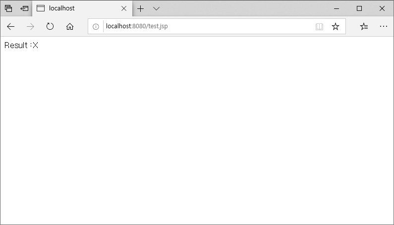
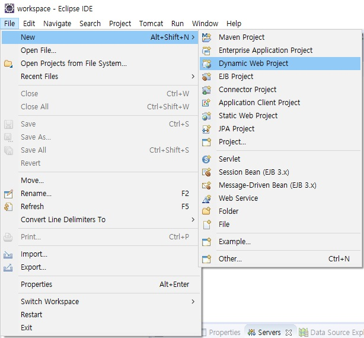
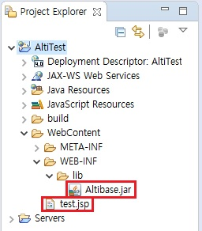
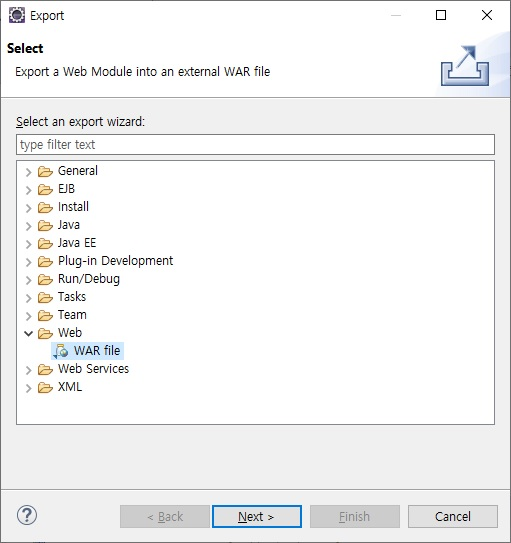
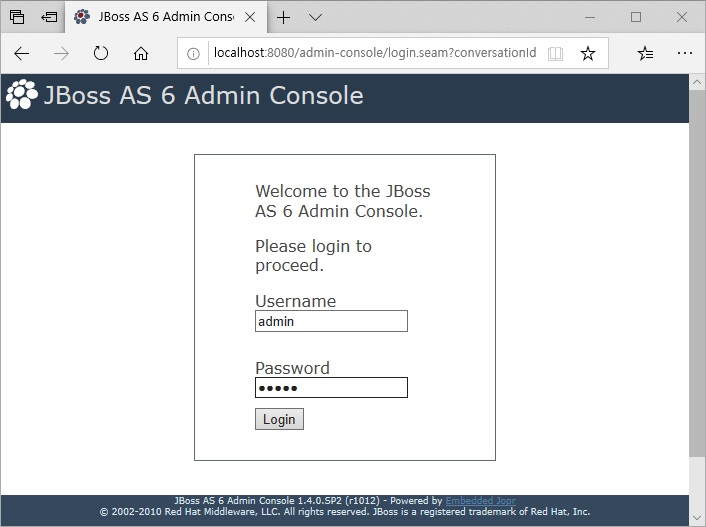
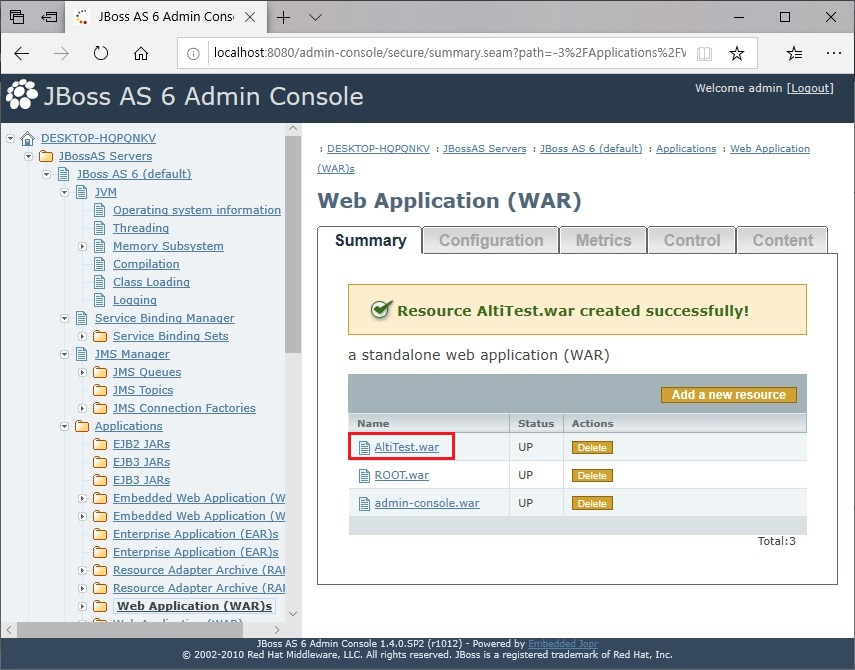
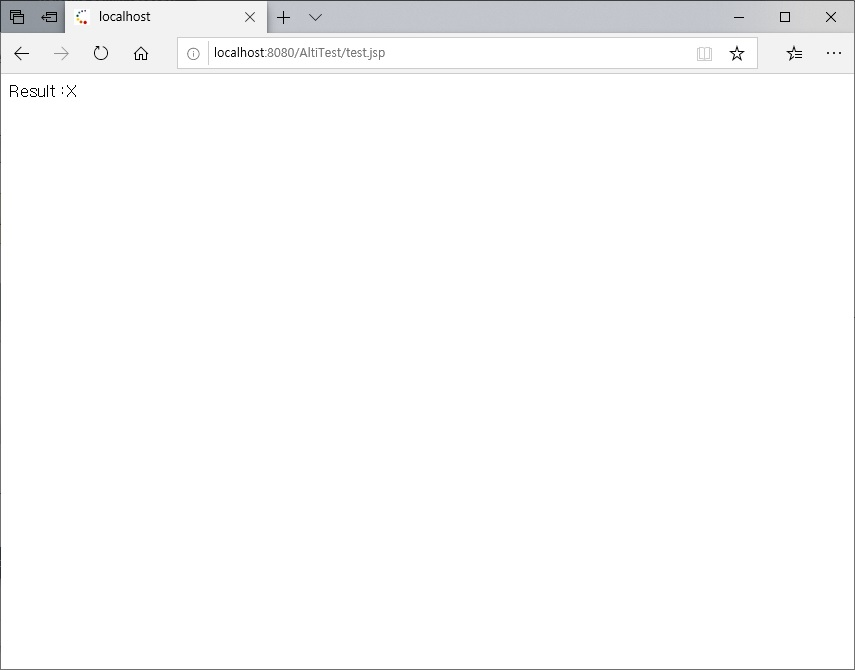

From learning how to integrate Altibase and JBoss from previous chapters, this chapter describes how to check the connection between Altibase and JBoss by accessing querying Altibase using the above settings and configurations.
Example of JSP
<%@ page import="javax.naming.*" %>
<%@ page import="java.sql.*" %>
<%@ page import="javax.sql.*" %>
<%
Connection con=null;
Statement st=null;
ResultSet rs=null;
try
{
InitialContext ctx = new InitialContext();
DataSource ds = (DataSource)ctx.lookup("java:/AltiTest");
con=ds.getConnection();
st=con.createStatement();
rs=st.executeQuery("select * from dual");
while(rs.next())
{
out.println("Result :" + rs.getString(1)+"<br>");
}
}
catch(Exception e)
{
out.println("Error:" + e.getMessage());
e.printStackTrace();
}
finally
{
if(rs!=null)rs.close();
if(st!=null)st.close();
if(con!=null)con.close();
}
%>
How to run
There are two methods to test the integration between Altibase and JBoss.
- Creating a JSP file to be tested in the exiting WAR.
- Testing after creating the WAR directly and deploying it in JBoss.
Using existing WAR
In the JBOSS_HOME/server/default directory, there is a WAR provide by the JBoss. After creating the JSP example file in the provided WAR, test it.
When testing gin this document, a JSP file was created and used in the default location, ROOT.war.(JBOSS_HOME/server/default/deploy/ROOT.war) After creating the JSP file, enter the server IP, port number, and JSP file name on which JBoss is running in the address bar in order.
http://server_ip:port number/jsp file name Example) http://localhost/test.jsp |
|---|

Creating WAR
This section describes how to test using a JSP file with JBoss web console.
Deploy refers to all operations that load and control module files on JBoss to start application services.
In the sample test, how to create a WAR file using the example provided above, deploy it to the JBoss server, and execute it.
The WAR file used in the example test was created by using the Eclipse.
1.이클립스를 실행시켜서 [File] → [New] → [Project] 를 선택한 후에 다음의 Wizard 에서 [Web] → "Dynamic Web Project" 를 선택하여 프로젝트 이름을 설정한다.

2. When the project is created as follows, the example above is created as a JSP file and added under the "WebContent" directory, and Altibase.jar is added under the "lib" directory.

3. When JSP file and Altibase.jar file have been added, select [File] → [Export], select [Web] → "War file", and specify the path to create, and the WAR is created.

4. When the WAR file is created, upload the WAR file by clicking "Web Application" → "Add a new resource" in the JBoss web console.


5. When the created WAR file is uploaded, it is automatically deployed, and a message indicating that the deployment was successful is displayed. The deployed WAR file can also be checked on the list.

6. When the deployment is complete, run the Internet window and enter the following URL to execute.
http://server_ip:port number/WAR name/jsp file name |
|---|

{kind=link}
{kind=link}
{kind=link}
{kind=link}
{kind=link}
{kind=link}
{kind=link}
{kind=link}